OPGAVE
Plakatdesign af et nærområde i samarbejde med Nationalmuseet.
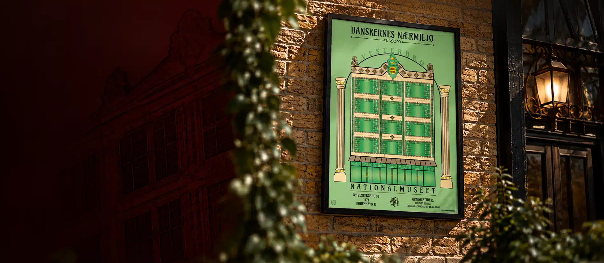
2024
Plakatdesign af et nærområde i samarbejde med Nationalmuseet.
↓ SCROLL NEDPlakatdesign af et nærområde i samarbejde med Nationalmuseet.
Plakat af Hotel Savoy (tidligere Løvenborg) på Vesterbrogade, designet i Art Nouveau-stil for at matche bygningens arkitektur. Originale farver er forstærket, og selvdesignede Art Nouveau-elementer er tilføjet.
Adobe Illustrator
4 dage – idéudvikling, design og produktion.
Nationalmuseet
Plakatdesign
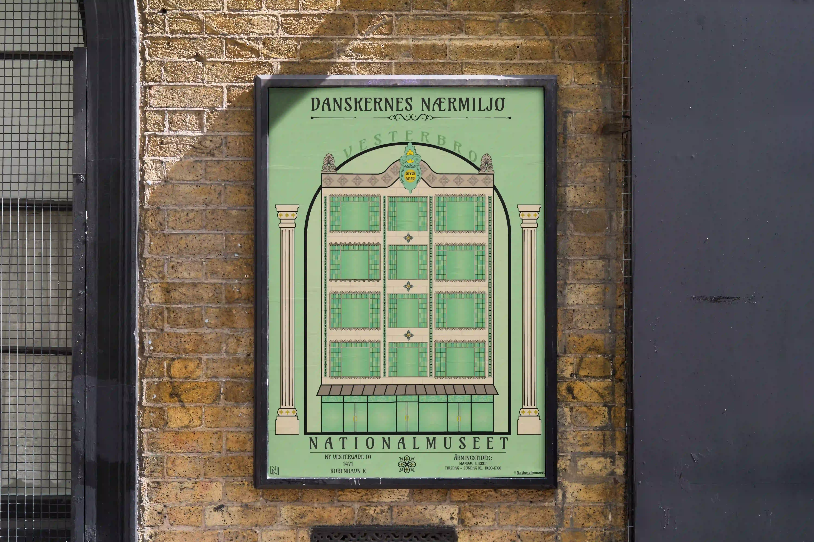
Målet med projektet var at skabe en plakat, der formidler bygningens historie og arkitektoniske særpræg. Jeg tog udgangspunkt i Hotel Savoys facade og arbejdede med Art Nouveau som visuel inspiration.
Jeg ønskede at bevare bygningens karakter, samtidig med at jeg fremhævede de dekorative detaljer, farver og former. Resultatet blev en plakat, hvor arkitekturen og de grafiske elementer spiller sammen.
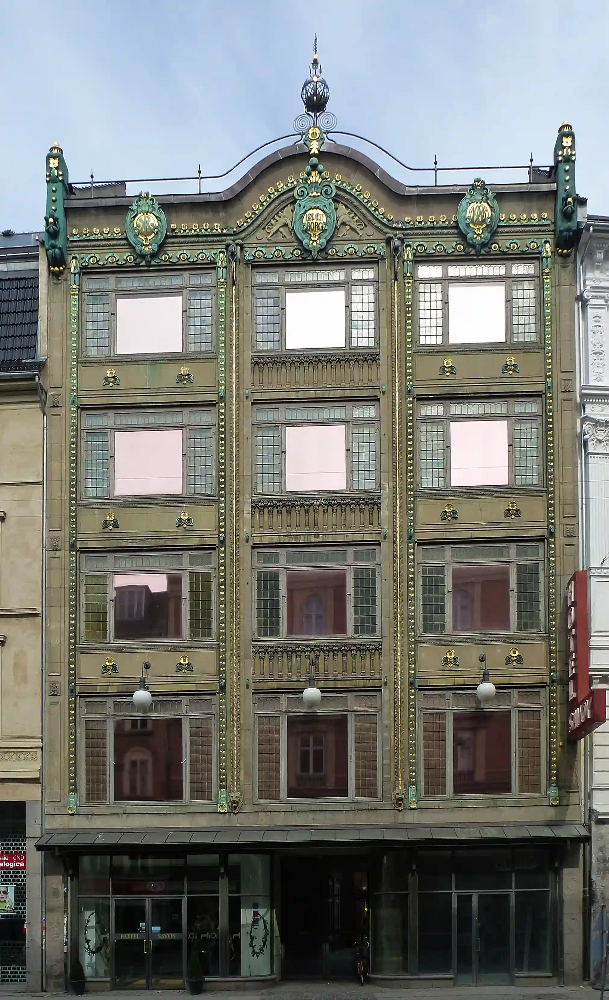
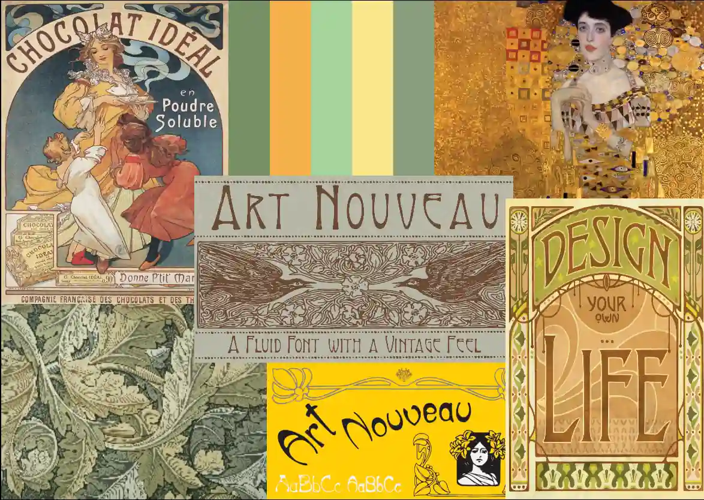
Farver inspireret af bygningens facade og de dekorative detaljer.
Processen startede med håndskitser, hvor jeg undersøgte bygningens struktur, ornamenter og typografi. Derefter udviklede jeg de grafiske elementer digitalt i Adobe Illustrator.
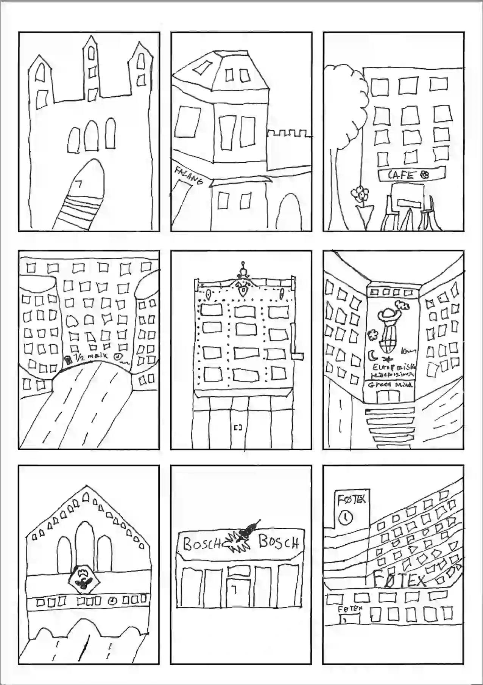
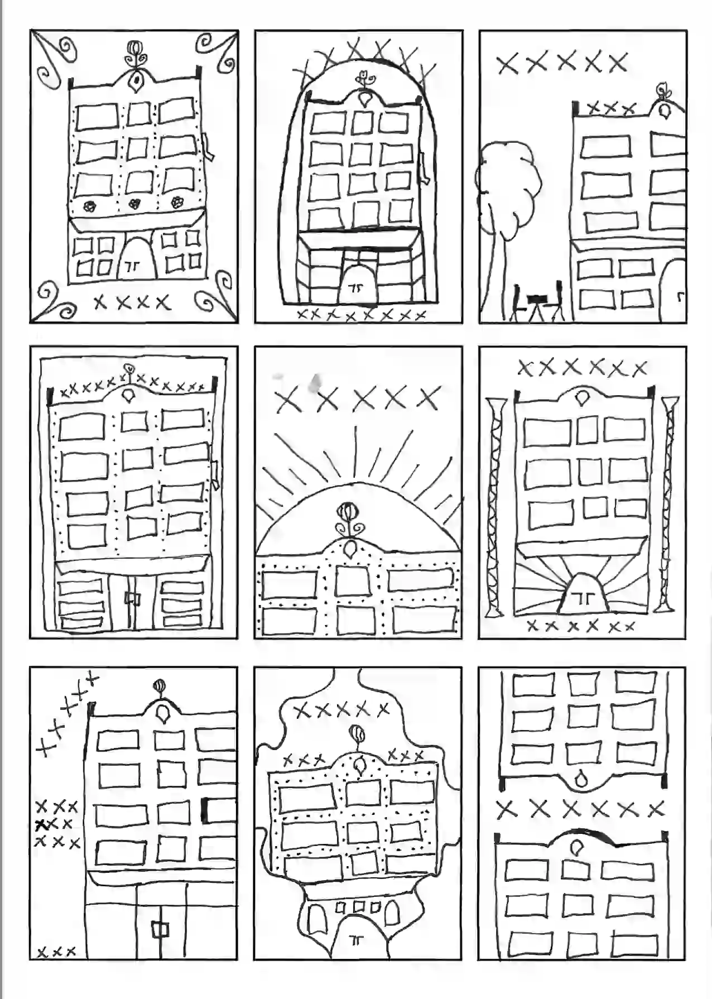
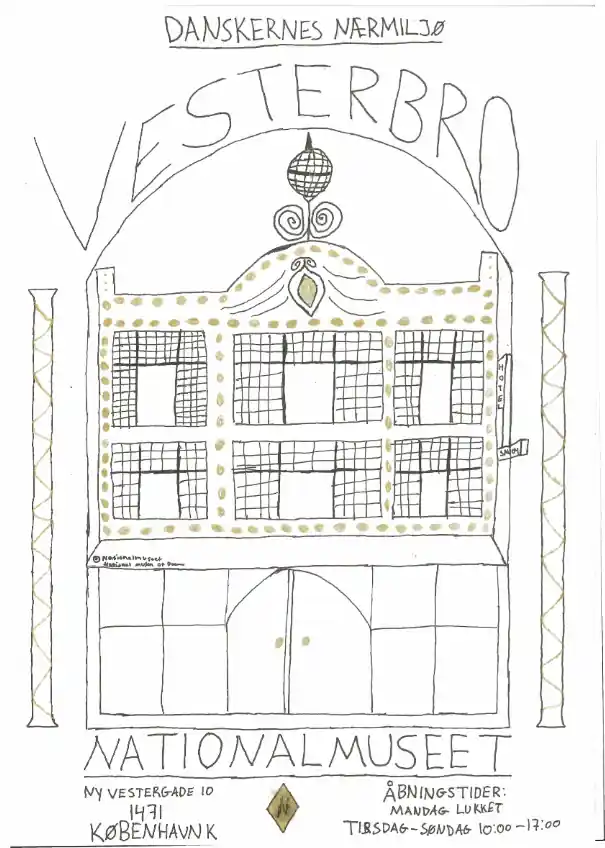
Jeg arbejdede med små detaljer inspireret af Art Nouveau, blandt andet Løvenborg-symbolet, søjler og vinduer. Elementerne er med til at fremhæve bygningens historiske udtryk.
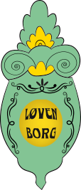
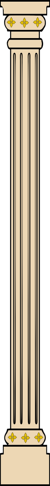
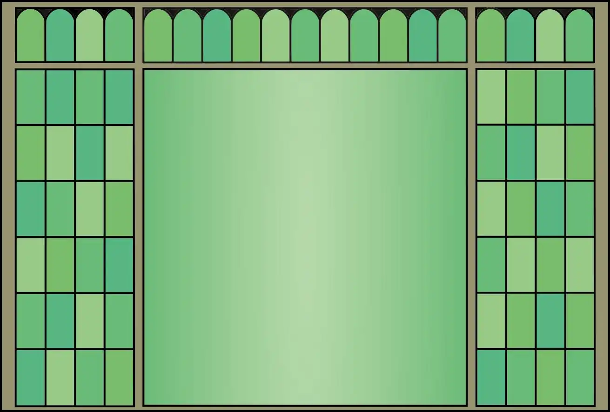
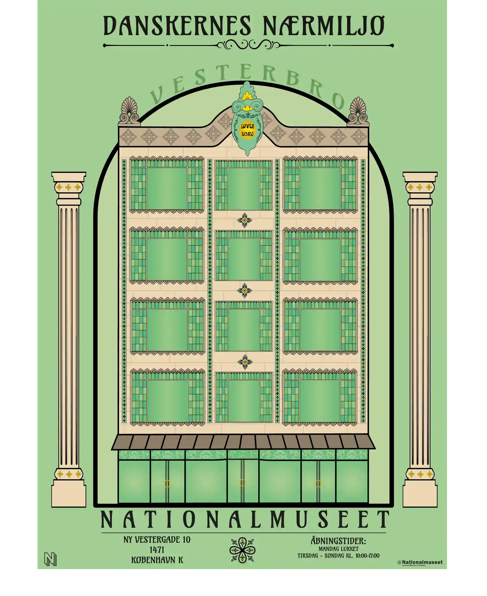